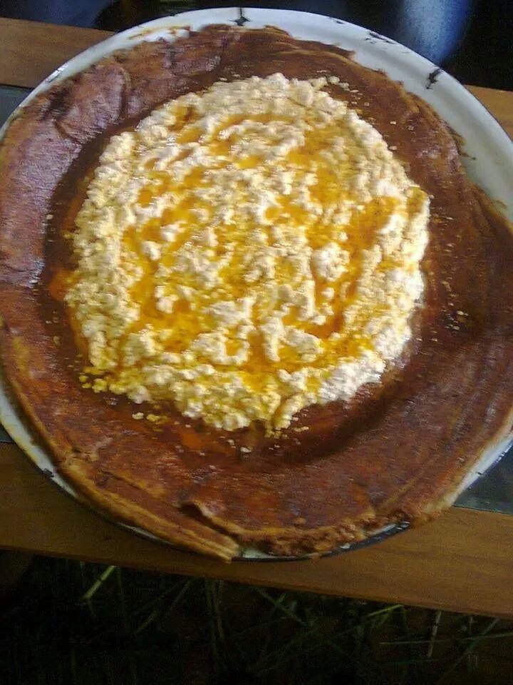

Chororsa, a cherished cultural food of the Oromo people, is a robust and flavorful
spiced butter that serves as far more than a simple condiment. It is traditionally
prepared by slowly simmering butter with a distinct blend of aromatic herbs and spices,
which typically include koseret (a lemony herb similar to lemon verbena),
tenadam (rue), tikur azmud (black cumin), garlic, ginger, and
other locally sourced ingredients. The mixture is carefully cooked until the milk solids separate and
the spices fully infuse, resulting in a fragrant, golden, and clarified substance. Chororsa is not merely
a recipe but a preserved knowledge, with each family often guarding its specific blend and preparation method,
passed down through generations as a culinary heirloom.
In Oromo society, Chororsa holds profound cultural significance, deeply intertwined with daily life and special occasions. It is a staple enhancement for staple foods like Buddeena (flatbread) and Marqa (a porridge), and is essential in preparing traditional dishes such as chechebsa (shredded flatbread in spiced butter). Beyond its everyday use, Chororsa is central to social ceremonies, including weddings, births, and religious festivals like Irreecha(Thanksgiving), where its rich aroma symbolizes hospitality, blessing, and abundance. Its consumption is also associated with health and wellness in Oromo traditional medicine, believed to aid digestion and strengthen the body. Thus, Chororsa embodies the Oromo community's connection to their land, their history, and their shared identity, making it a true essence of Oromo cultural heritage.